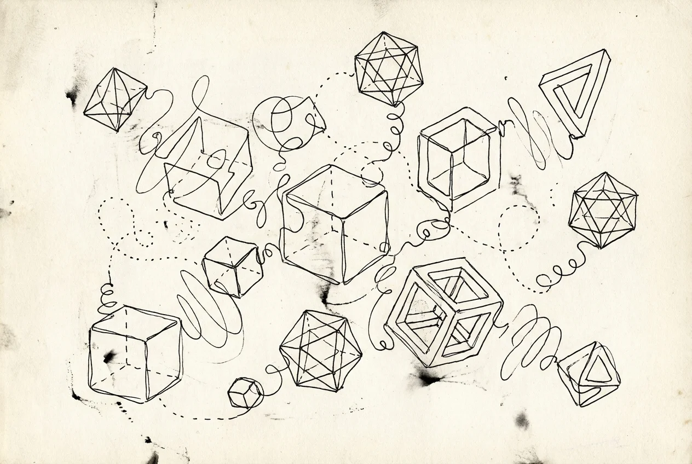
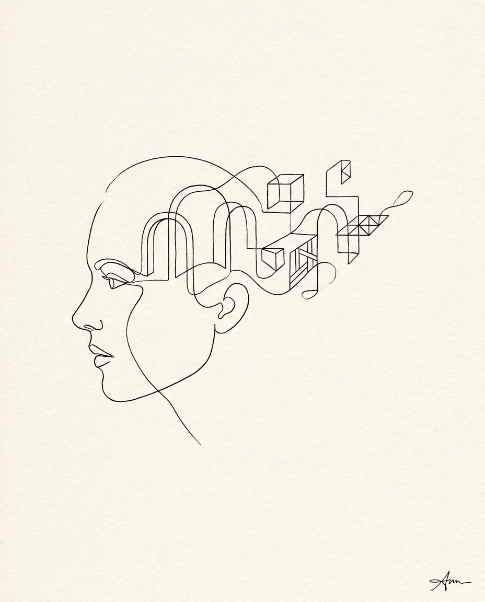
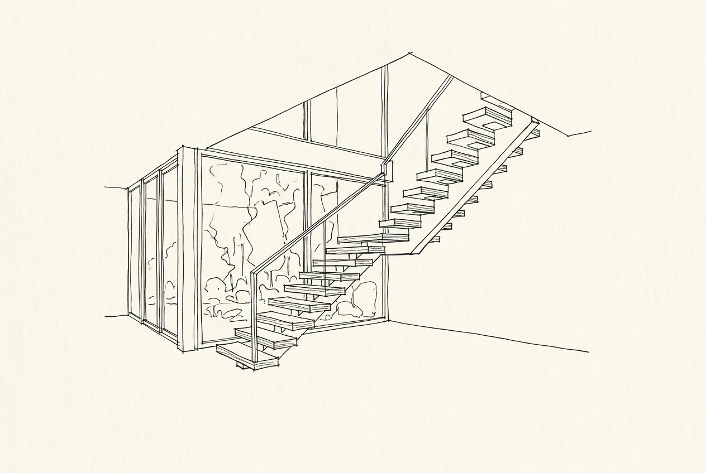
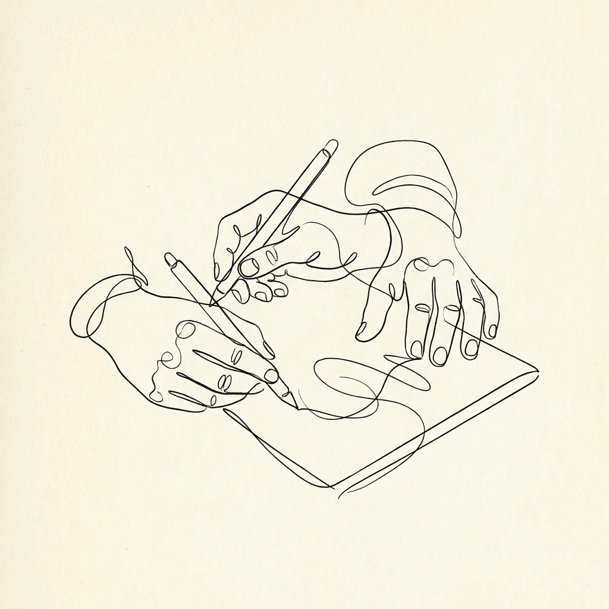

無題・沉浸策展
↗
線構 LINEFORM 把空間的線條思維帶進瀏覽器。我們用 Three.js 與生成演算法，讓品牌在滑鼠與捲動之間，被一條線重新畫出來。
線是最古老的設計工具，也是最誠實的。它沒有填色可以遮掩，每一個轉折都是決定。線構把這份誠實帶進數位介面——少即是多，動即是敘事。
從一筆畫的品牌符號，到由演算法即時生成的沉浸場景，我們讓「線」成為品牌與人之間，最直接的對話。

以 Three.js / WebGL 打造捲動敘事與互動場景，讓品牌官網本身成為一件作品。
用程式碼即時繪圖，為展覽、活動與品牌打造獨一無二、永不重複的視覺。
從單線符號出發的品牌識別系統，可動可靜，在各種媒介上維持一致的手感。
結合感測與即時影像，為實體空間設計可被觸碰、會回應的數位互動。
會呼吸的文字與版面，讓內容在閱讀過程中產生節奏與情緒。
從效能到可維護性，協助團隊把實驗性的互動，穩定地落地到正式產品。



從品牌核心出發，找出最值得被「一條線」放大的那個概念。
大量手繪與程式草稿並行，快速試出互動的手感與節奏。
以 Three.js 與前端工程實作，兼顧視覺張力與真實效能。
上線、優化、教學文件，讓團隊也能輕鬆維護這件作品。
無論是一場展覽、一個品牌，或一個還很模糊的點子——告訴我們，讓線構替它找到形狀。